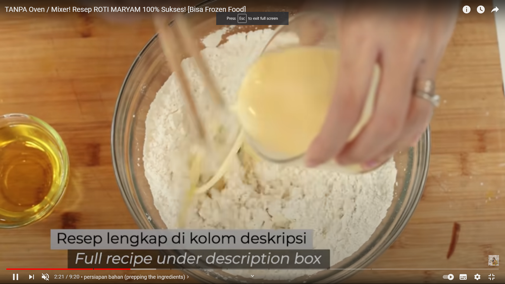
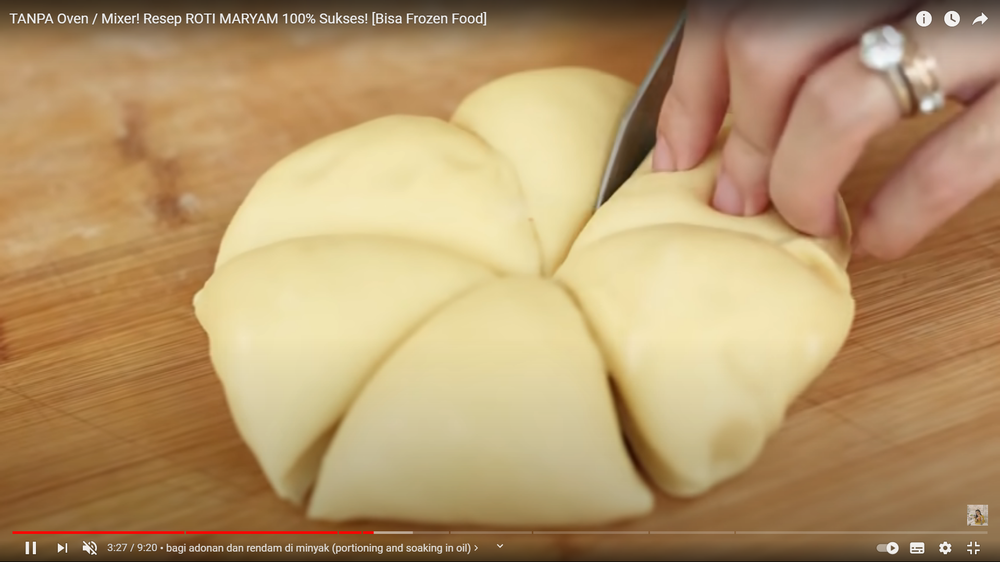

Resep Kue Maryam

Bahan-Bahan:
-
250 gr tepung terigu
-
1 butir telur
-
3sdm margarin, lelehkan
-
100ml air hangat
-
2 sdm susu bubuk (optional)
-
1/2 sdt garam
-
Margarin leleh untuk olesan
-
minyak untuk merendam
Langkah-langkah
- Campur semua bahan roti menjadi satu

- Bentul bulat dan potong seperti digambar

- Pukul pukul hingga menipis
- Bentuk seperti kipas
- Goreng dengan mentega hingga kecoklatan